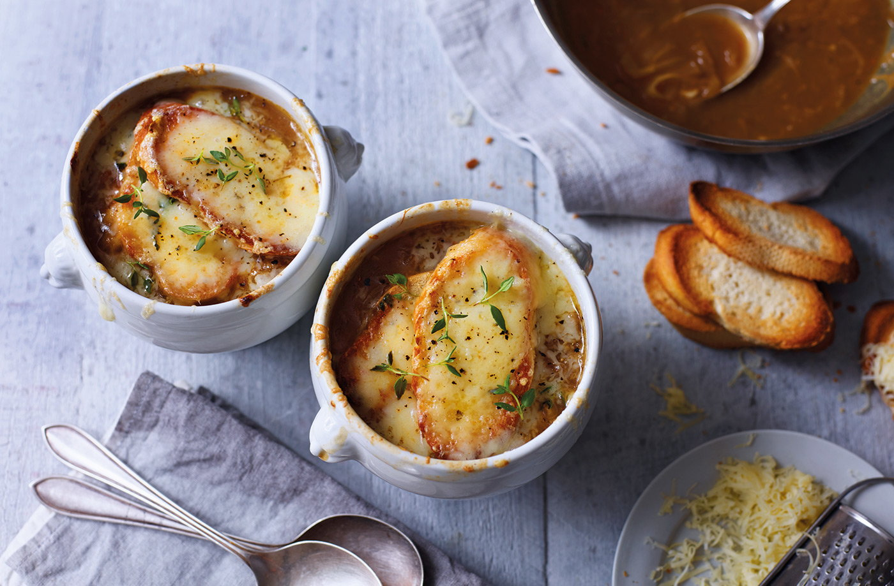

French Onion Soup

Description
This is a french onion soup recipe!
Serves 4
10 mins to prepare and 1hr 10 mins to cook
Ingredients
- 25g butter
- 1 tbsp vegetable oil
- 750g onion, thinly sliced
- pinch of salt
- 2 garlic cloves, thinly sliced
- 2 tsp plain flour
- 100ml dry white wine (optional)
- 2 beef stock cubes (or vegetable stock cubes)
- 1-2 sprigs fresh cut thyme, plus extra to serve
- 8 thin slices baguette, or similar crusty bread
- 125g Gruyère cheese, grated
Steps
- Melt the butter and oil together in a large
heavy-based pan over a medium heat.
Add the onions and salt and cook for 10 mins,
stirring regularly until softened.
Reduce the heat to low and cover the pan with a lid.
Cook for 15 mins, stirring occasionally.
- Add the garlic and cook, uncovered,
for another 10-12 mins or until the onions
are very soft and caramelised.
Keep stirring every so often to stop them catching.
- Sprinkle in the flour and stir to mix well.
Increase the heat and pour in the wine, if using,
allowing it to bubble away for a few mins.
Make up the stock cubes with 1 ltr hot water and
add to the pan along with the thyme sprigs.
Bring to the boil, then leave to simmer for 30 mins.
- Preheat the grill to high. Toast the baguette slices
on each side. Ladle the soup into 4 heat-proof bowls
or dishes and top each with 2 baguette slices.
Scatter with the grated cheese then cook under
the hot grill for 1-2 mins until the cheese is melted,
bubbling and golden.
- Garnish with freshly ground black pepper
and a few fresh thyme leaves to serve.